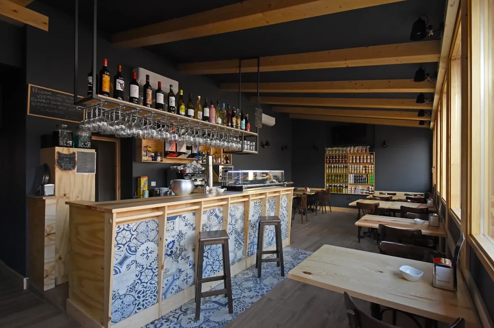
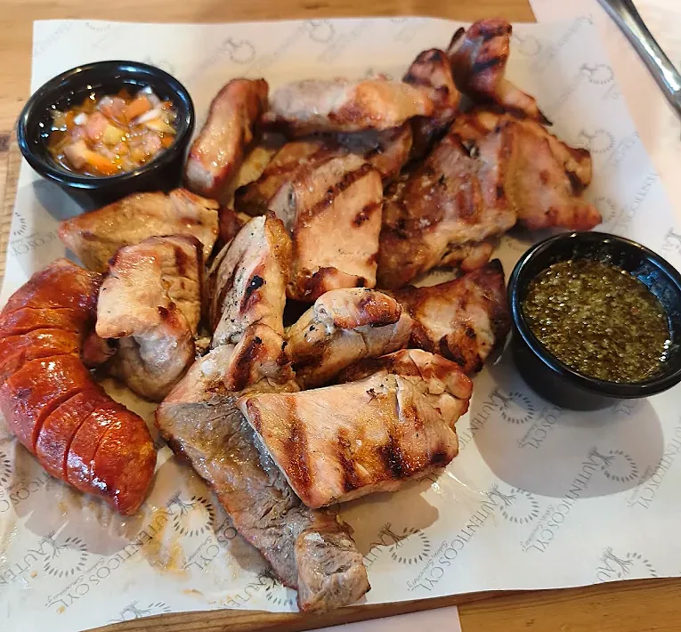

Temporada de verano
Llega nuestra carta de verano
Producto de temporada, cocina a la brasa y platos nuevos como los chipirones en texturas, la ensalada de ahumados con cereza y avellana o la burrata con cerezas asadas.
Ver los imprescindibles →
Coca · Segovia · a los pies del castillo
Sabores, Sensaciones y +
Bar tapería y tienda de productos de Castilla y León. Cocina a la brasa, producto de temporada y una bodega con más de 500 vinos de nuestra tierra.

El restaurante
Nuestra carta nace del mejor producto de temporada y de la cocina a la brasa. Respetamos el producto, el fuego y el tiempo para llevar cada ingrediente a su máxima expresión: platos memorables, honestos y sorprendentes.
De día, los imprescindibles de siempre, las carnes maduradas al josper y el mar. Cuando cae el sol llegan Las noches de Auténticos: hamburguesas de autor y bocados para disfrutar sin prisas, solo en las cenas.
De nuestra cocina
Nuestros imprescindibles
Chipirones en texturas

A la brasa y el mar
Tabla de carnes Duroc a la brasa

Las noches de Auténticos
La Rabo de Toro

Nuestros imprescindibles
Croquetas súper cremosas de jamón

Nuestros imprescindibles
Torrezno de Soria bien crujiente

La repostería de Auténticos
Huevo de corral

La tienda
Un espacio gastronómico con productos artesanos de Segovia, Valladolid, Soria, Palencia, Burgos, Ávila, Zamora, Salamanca y León. Lo que pruebas en la mesa lo puedes llevar a casa.
¿No puedes venir? Tenemos tienda online con envíos a toda España.
Solo en servicio de cenas
La Bestia Castellana, Rock & Rolla, Deluxe Macarra, La Castiza… Hamburguesas de buey 100 % certificado y bocados para compartir.
Noticias y reconocimientos
Temporada de verano
Producto de temporada, cocina a la brasa y platos nuevos como los chipirones en texturas, la ensalada de ahumados con cereza y avellana o la burrata con cerezas asadas.
Ver los imprescindibles →
Solo en cenas
Cuando cae el sol se enciende la brasa: La Bestia Castellana, Rock & Rolla, Deluxe Macarra y el resto de hamburguesas de autor con buey 100 % certificado, solo en el servicio de cenas.
Ver Las Noches →
Novedad
La repostería de la casa estrena un granizado de lima con helado de yogur y gel de ron, y un postre de tomate rosa, melocotón y fresa con albahaca.
Ver la repostería →Tripadvisor
Entre los mejor valorados de Coca
Nuestros clientes nos sitúan entre los restaurantes mejor valorados de Coca.
Ver opiniones →Nuestra tienda
Productos con denominación de origen de Castilla y León
Desde 2014 reunimos productos artesanos de las nueve provincias de Castilla y León.
Dónde estamos
A unos pasos del castillo de Coca, joya del mudéjar castellano. Ven a comer, a cenar o a tomar algo en la barra, y llévate un trocito de Castilla y León.